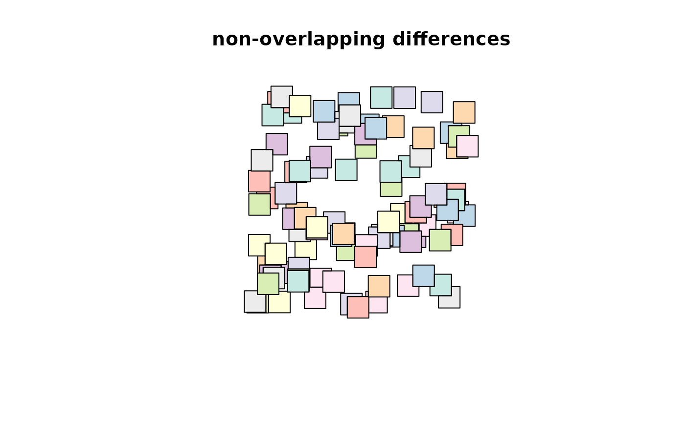
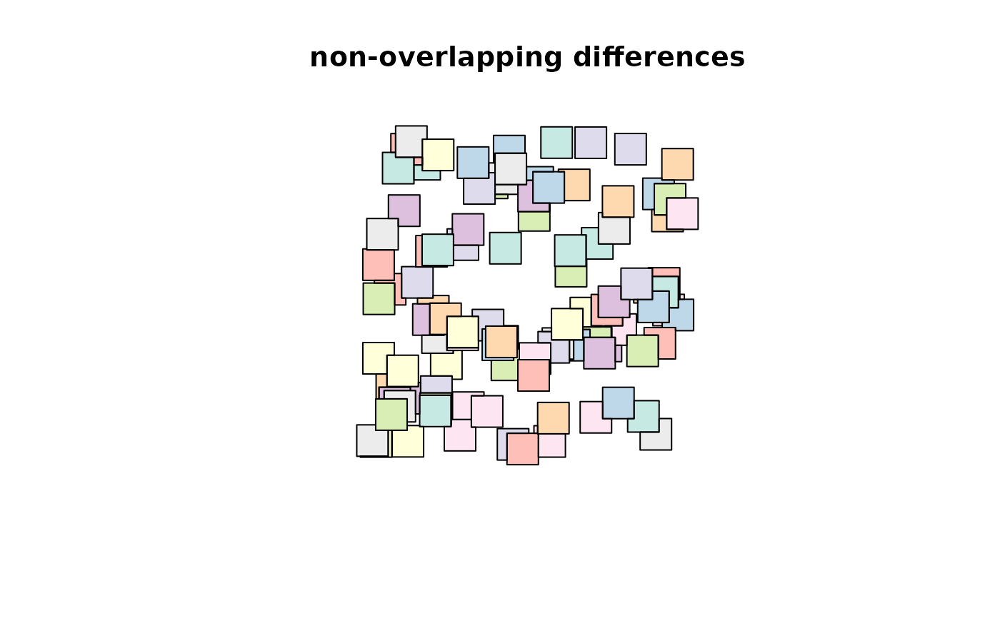
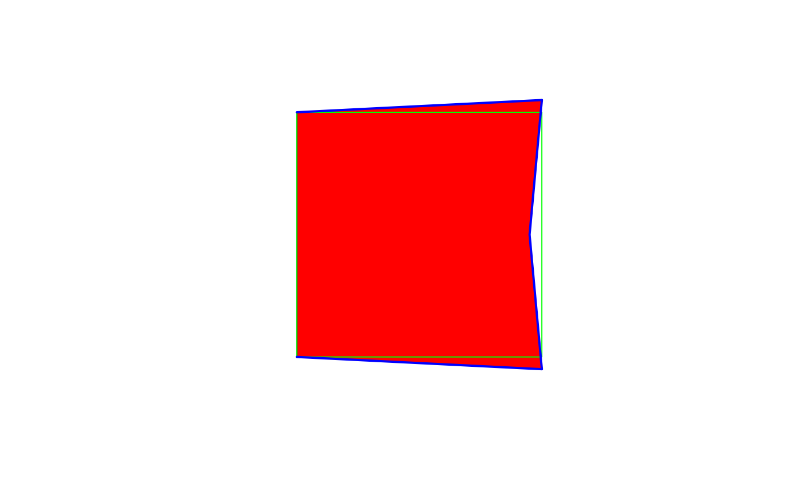
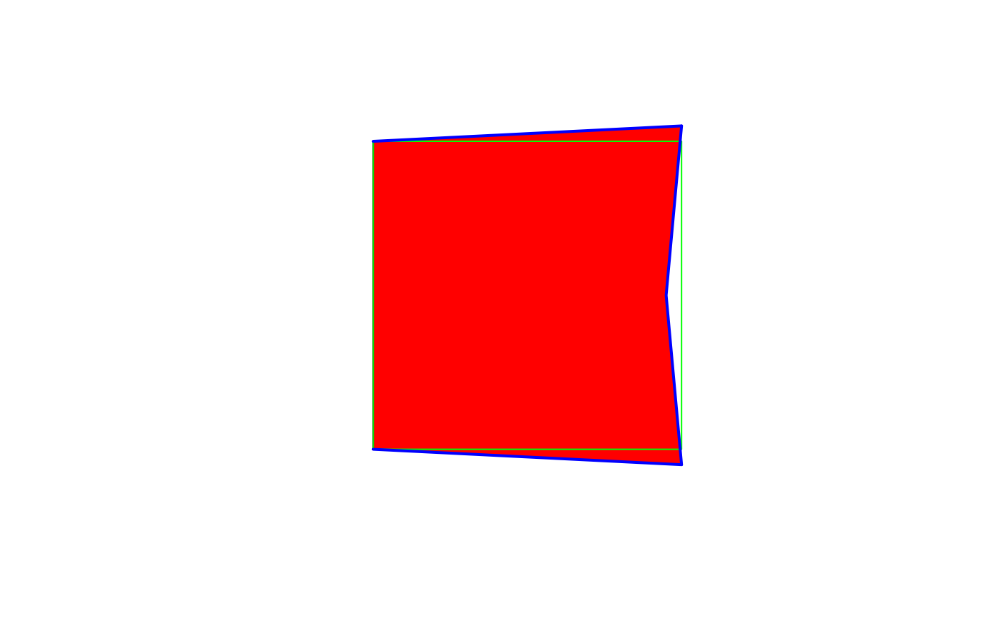

Geometric operations on pairs of simple feature geometry sets
Source:R/geom-transformers.R
geos_binary_ops.RdPerform geometric set operations with simple feature geometry collections
Usage
st_intersection(x, y, ...)
# S3 method for class 'sfc'
st_intersection(x, y, ...)
# S3 method for class 'sf'
st_intersection(x, y, ...)
st_difference(x, y, ...)
# S3 method for class 'sfc'
st_difference(x, y, ...)
st_sym_difference(x, y, ...)
st_snap(x, y, tolerance)Arguments
- x
object of class
sf,sfcorsfg- y
object of class
sf,sfcorsfg- ...
arguments passed on to s2_options
- tolerance
tolerance values used for
st_snap; numeric value or object of classunits; may have tolerance values for each feature inx
Value
The intersection, difference or symmetric difference between two sets of geometries.
The returned object has the same class as that of the first argument (x) with the non-empty geometries resulting from applying the operation to all geometry pairs in x and y. In case x is of class sf, the matching attributes of the original object(s) are added. The sfc geometry list-column returned carries an attribute idx, which is an n-by-2 matrix with every row the index of the corresponding entries of x and y, respectively.
Details
When using GEOS and not using s2, a spatial index is built on argument x; see https://r-spatial.org/r/2017/06/22/spatial-index.html. The reference for the STR tree algorithm is: Leutenegger, Scott T., Mario A. Lopez, and Jeffrey Edgington. "STR: A simple and efficient algorithm for R-tree packing." Data Engineering, 1997. Proceedings. 13th international conference on. IEEE, 1997. For the pdf, search Google Scholar.
When called with missing y, the sfc method for st_intersection returns all non-empty intersections of the geometries of x; an attribute idx contains a list-column with the indexes of contributing geometries.
when called with a missing y, the sf method for st_intersection returns an sf object with attributes taken from the contributing feature with lowest index; two fields are added: n.overlaps with the number of overlapping features in x, and a list-column origins with indexes of all overlapping features.
When st_difference is called with a single argument,
overlapping areas are erased from geometries that are indexed at greater
numbers in the argument to x; geometries that are empty
or contained fully inside geometries with higher priority are removed entirely.
The st_difference.sfc method with a single argument returns an object with
an "idx" attribute with the original index for returned geometries.
st_snap snaps the vertices and segments of a geometry to another geometry's vertices. If y contains more than one geometry, its geometries are merged into a collection before snapping to that collection.
(from the GEOS docs:) "A snap distance tolerance is used to control where snapping is performed. Snapping one geometry to another can improve robustness for overlay operations by eliminating nearly-coincident edges (which cause problems during noding and intersection calculation). Too much snapping can result in invalid topology being created, so the number and location of snapped vertices is decided using heuristics to determine when it is safe to snap. This can result in some potential snaps being omitted, however."
Note
To find whether pairs of simple feature geometries intersect, use
the function st_intersects instead of st_intersection.
When using GEOS and not using s2 polygons contain their boundary. When using s2 this is determined by the model defaults of s2_options, which can be overridden via the ... argument, e.g. model = "closed" to force DE-9IM compliant behaviour of polygons (and reproduce GEOS results).
Examples
set.seed(131)
library(sf)
m = rbind(c(0,0), c(1,0), c(1,1), c(0,1), c(0,0))
p = st_polygon(list(m))
n = 100
l = vector("list", n)
for (i in 1:n)
l[[i]] = p + 10 * runif(2)
s = st_sfc(l)
plot(s, col = sf.colors(categorical = TRUE, alpha = .5))
title("overlapping squares")
 d = st_difference(s) # sequential differences: s1, s2-s1, s3-s2-s1, ...
plot(d, col = sf.colors(categorical = TRUE, alpha = .5))
title("non-overlapping differences")

i = st_intersection(s) # all intersections
plot(i, col = sf.colors(categorical = TRUE, alpha = .5))
title("non-overlapping intersections")
d = st_difference(s) # sequential differences: s1, s2-s1, s3-s2-s1, ...
plot(d, col = sf.colors(categorical = TRUE, alpha = .5))
title("non-overlapping differences")

i = st_intersection(s) # all intersections
plot(i, col = sf.colors(categorical = TRUE, alpha = .5))
title("non-overlapping intersections")
 summary(lengths(st_overlaps(s, s))) # includes self-counts!
#> Min. 1st Qu. Median Mean 3rd Qu. Max.
#> 0.00 2.00 3.50 3.66 5.00 8.00
summary(lengths(st_overlaps(d, d)))
#> Min. 1st Qu. Median Mean 3rd Qu. Max.
#> 0 0 0 0 0 0
summary(lengths(st_overlaps(i, i)))
#> Min. 1st Qu. Median Mean 3rd Qu. Max.
#> 0 0 0 0 0 0
sf = st_sf(s)
i = st_intersection(sf) # all intersections
plot(i["n.overlaps"])
summary(lengths(st_overlaps(s, s))) # includes self-counts!
#> Min. 1st Qu. Median Mean 3rd Qu. Max.
#> 0.00 2.00 3.50 3.66 5.00 8.00
summary(lengths(st_overlaps(d, d)))
#> Min. 1st Qu. Median Mean 3rd Qu. Max.
#> 0 0 0 0 0 0
summary(lengths(st_overlaps(i, i)))
#> Min. 1st Qu. Median Mean 3rd Qu. Max.
#> 0 0 0 0 0 0
sf = st_sf(s)
i = st_intersection(sf) # all intersections
plot(i["n.overlaps"])
 summary(i$n.overlaps - lengths(i$origins))
#> Min. 1st Qu. Median Mean 3rd Qu. Max.
#> 0 0 0 0 0 0
# A helper function that erases all of y from x:
st_erase = function(x, y) st_difference(x, st_union(st_combine(y)))
poly = st_polygon(list(cbind(c(0, 0, 1, 1, 0), c(0, 1, 1, 0, 0))))
lines = st_multilinestring(list(
cbind(c(0, 1), c(1, 1.05)),
cbind(c(0, 1), c(0, -.05)),
cbind(c(1, .95, 1), c(1.05, .5, -.05))
))
snapped = st_snap(poly, lines, tolerance=.1)
plot(snapped, col='red')
plot(poly, border='green', add=TRUE)
plot(lines, lwd=2, col='blue', add=TRUE)

summary(i$n.overlaps - lengths(i$origins))
#> Min. 1st Qu. Median Mean 3rd Qu. Max.
#> 0 0 0 0 0 0
# A helper function that erases all of y from x:
st_erase = function(x, y) st_difference(x, st_union(st_combine(y)))
poly = st_polygon(list(cbind(c(0, 0, 1, 1, 0), c(0, 1, 1, 0, 0))))
lines = st_multilinestring(list(
cbind(c(0, 1), c(1, 1.05)),
cbind(c(0, 1), c(0, -.05)),
cbind(c(1, .95, 1), c(1.05, .5, -.05))
))
snapped = st_snap(poly, lines, tolerance=.1)
plot(snapped, col='red')
plot(poly, border='green', add=TRUE)
plot(lines, lwd=2, col='blue', add=TRUE)
